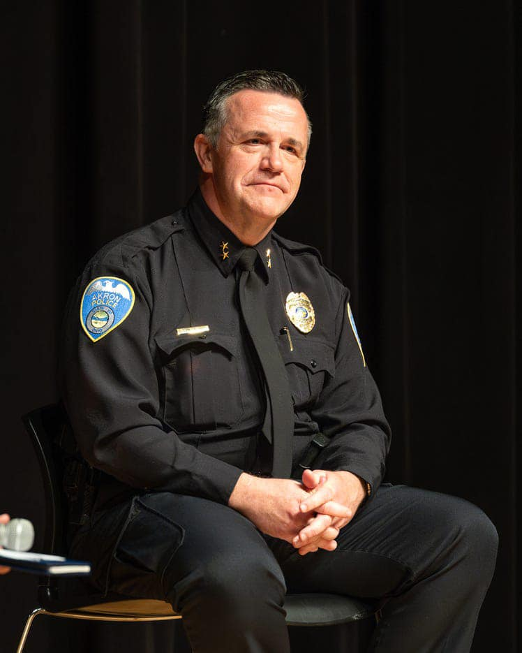

Mobile uploads
This guy is going to be our new police chief.
His comment on what he was going to do about racism in the Akron Police Department:
“Overall, I don't think we have a racist department.”
That was all after addressing “Signal 44,” an underground newsletter that circulated in the police department dating back to at least 1997. It was the subject of an internal affairs review in 1998.
The newsletter contained racist depictions of Black Akron residents, disparaged people seeking housing with the Akron Metropolitan Housing Authority and more.
Harding knew of the newsletter at the time, he did not report it.
That was also after the moderator, a law professor, described what happened when he asked his classes how many students had been pulled over by the police.
"I stopped asking the question because the same people always raised their hands. Every Black male would have a story," Lee said. "We have this problem that has happened over and over. The experience is of being pulled over for no good reason."
This old white dude is just a stereotypical old white dude. He has zero emotional intelligence or social orientation. And he’s in charge of the people with all guns and artillery.
Changing the system is hopeless.
There is only one place where hope is possible: with the people.
We must do everything in our power to keep the system out of our lives.